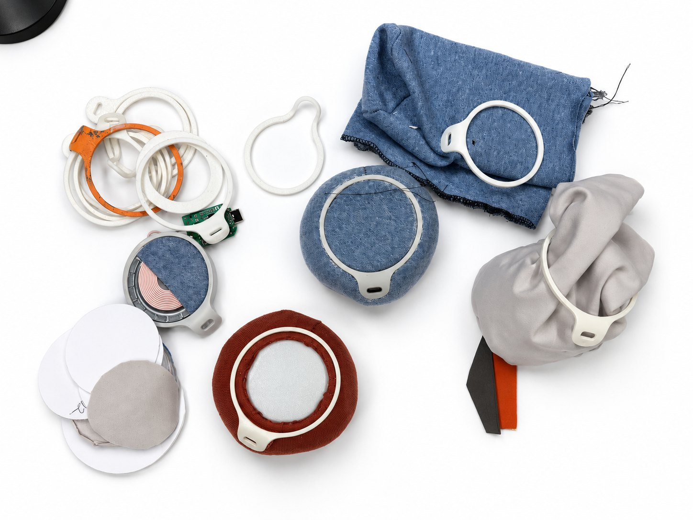

You usually check charging on a screen, but charging also makes heat you can feel.
Phones and chargers show charging with numbers, icons and small status lights, so you have to look to know. Heat is different, because you can notice it with your hand without looking. The project set out to make a charger you understand by touch, and it had four goals.
- ApproachableIt has no lights and no numbers.
- TactileThe surface is soft fabric.
- IntuitiveYou adjust it by pressing, not through settings.
- PersonalIt keeps the shape you give it.



Wax was chosen for the core after several skins and fillings were tested.
The tests for the outer skin covered latex, TPU (a flexible plastic), silicone and knitted fabric. The tests for the filling covered magnetic beads, steel balls, a thick liquid and wax. Wax gives way when you press it and then stays put under the weight of a phone. The final core is 250 g of microcrystalline wax mixed with 30 g of mineral oil, sealed in a film bag and covered with a two-way stretch knit. A rigid PLA ring on top holds the MagSafe module, and the USB-C port is set into the side of the ring.


You press the phone to the angle you want, and NEST keeps it there.
This works at room temperature, so the phone can lie almost flat or lean up towards you. While it charges, NEST gets slightly warm. That warmth is the only sign that it is working, because the charger has no light and no screen.